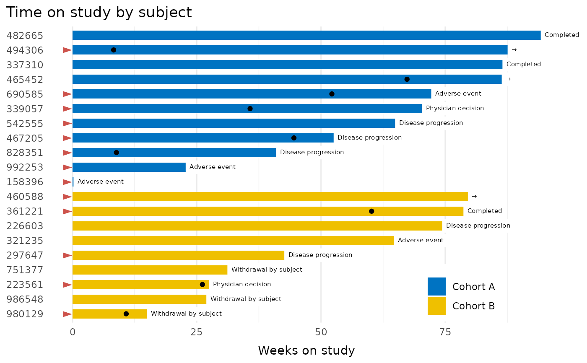

geom_swimlane_rug.RdAdd a rug to the right-hand margin of a swimlane
geom_swimlane_rug(
x,
hjust = 1,
vjust = 0.5,
label_var,
labels = NULL,
color = "black",
...
)Typically a subject identifier
Used to adjust position in the margin
Used to adjust vertical position in the margin
Variable with the desired symbol or text annotation
A named vector transforming label_var to symbols (currently not used)
Label colors (will accept a vector when the labels arg is activated)
Further arguments to ggtext::geom_richtext()
library(ggplot2)
patient_disposition %>%
dplyr::mutate(
reason_off_study = tidyr::replace_na(reason_off_study, "→"),
prior_drug = dplyr::case_when(
prior_drug == "Yes"~ "►",
TRUE ~ NA_character_
)
) %>%
order_swimlane(subject, weeks_on_study, cohort) %>%
ggplot() +
geom_swimlane(subject, weeks_on_study, cohort) +
ggsci::scale_fill_jco() +
geom_swimlane_text(subject, weeks_on_study, reason_off_study) +
geom_point(
aes(x = subject, y = partial_response),
na.rm = TRUE
) +
geom_swimlane_rug(x = subject, label_var = prior_drug, color = "#CD534C") +
theme_swimlane(legend.position = c(.8, .1)) +
ggtitle("Time on study by subject") +
ylab("Weeks on study")
